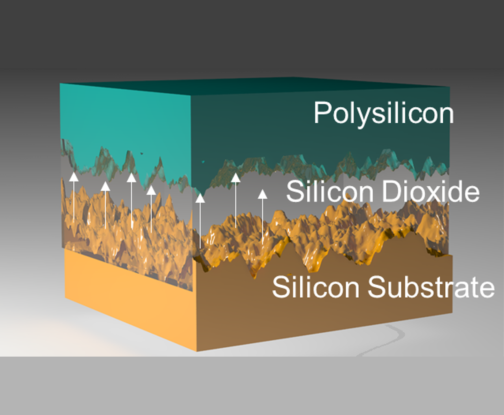

Self-Powered Sensing
Fowler-Nordheim Tunneling Timers: Zero-Power Dynamic Authentication

Source: AIMS Lab, WUSTL
"Sensing and time-keeping without batteries"
Project Description:
In this research, we develop sensors and timers that operate without any active power source by exploiting Fowler-Nordheim (FN) quantum tunneling of electrons through the gate oxide of floating-gate devices. Once initialized, the charge on the floating gate leaks at a physically determined, well-modeled rate, allowing the device to keep time, log events and sense its environment for months while dissipating near-zero power. Because the desynchronization between a pair of FN timers is practically impossible to clone or tamper with, the same mechanism can be used as a dynamic authenticator for passive Internet-of-Things devices, enabling trust verification across the electronics supply chain. Floating-gate temperature sensors based on the same principle were validated from -10°C to +50°C with ±1°C accuracy for cold-chain and supply-chain integrity monitoring.
List of Publications:
- Sri Harsha Kondapalli, Kenji Aono and Shantanu Chakrabartty. "Fowler-Nordheim tunneling timer desynchronization for IoT device trust verification." IEEE Transactions on Internet of Things, 2019.
- Sri Harsha Kondapalli, Kenji Aono and Shantanu Chakrabartty. "Self-powered floating-gate temperature sensor for supply-chain integrity." IEEE 62nd International Midwest Symposium on Circuits and Systems (MWSCAS), 2019.
- Sri Harsha Kondapalli and Shantanu Chakrabartty. "Zero-powered authentication using Fowler-Nordheim tunneling timers." NSF Technology Transfer Program (TTP) Poster, Chicago, 2019.
RF-Triggered Wake-up: Hybrid-Powered Passive IoT
"Listen for free, act only when needed"
Project Description:
Continuously listening radios dominate the power budget of wireless sensors. We developed an RF-triggered, hybrid wake-up architecture in which an ultra-low-power RF energy-harvesting front-end (915 MHz helical antenna with a 5-stage Dickson charge pump) passively monitors the channel and activates the battery-powered sensor node only when interrogated. This shifts the limiting factor of the sensor node from battery life to component lifetime, and is compatible with commercial UHF RFID infrastructure. A software-defined-radio (GNU Radio) interrogator was developed to characterize the end-to-end trigger link.
List of Publications:
- Sri Harsha Kondapalli, Owen Pochettino, Kenji Aono and Shantanu Chakrabartty. "Hybrid-Powered Internet-of-Things for Infrastructure-to-Vehicle Communication." IEEE 61st International Midwest Symposium on Circuits and Systems (MWSCAS), 2018.
- Sri Harsha Kondapalli, Owen Pochettino, Kenji Aono and Shantanu Chakrabartty. "SDR-based RF trigger interrogator for passive wake-up sensing." GNU Radio Conference (GRCon), 2019.